09.30.2009 21:30
LOTS in Google Earth Showcase
USCGC Healy and
Google Earth Outreach Showcase - 2009 U.S. Law of the Sea -
Arctic
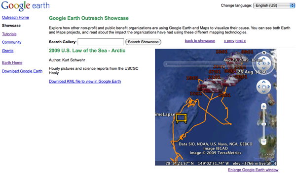
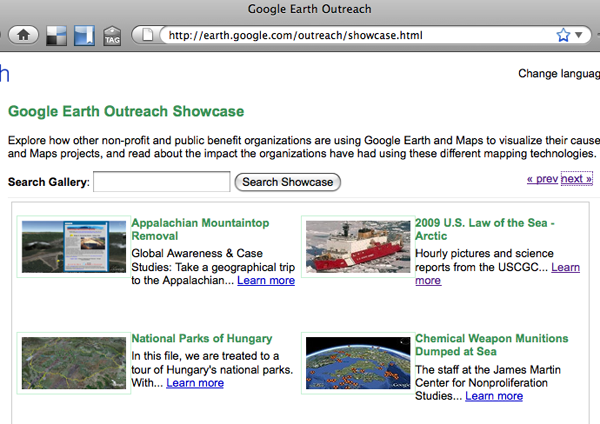
09.30.2009 13:08
Healy 2009 Law of the Sea cruise in the Arctic - KMZ
I've created a Google Earth
visualization of the 2009 Healy cruise for the U.S. Law of the Sea
mapping. Thanks to the LDEO team for producing the data feeds that
I used for this visualization. The visualization includes the ship
track in orange, a time lapse video via YouTube, the aloftcon
images at each point, and the hourly science summary that include
the weather and water depth.
2009healy-lots-cruise.kmz
Trackbacks: Loop Links, Biodiversity and the Law of the Sea [GEB]
Healy in Google Earth Showcase [CSHEL]
2009healy-lots-cruise.kmz
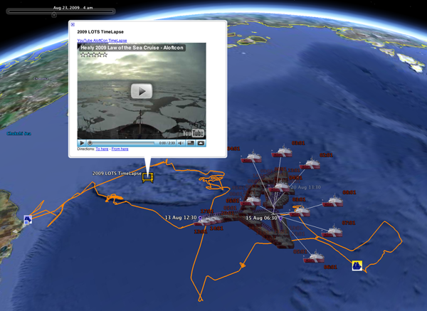
Trackbacks: Loop Links, Biodiversity and the Law of the Sea [GEB]
Healy in Google Earth Showcase [CSHEL]
09.29.2009 14:50
Hassler on a crane
A chance to see the whole ship. We
can't wait for her to arrive in here in NH!
09.29.2009 10:43
iPhone GPS
When we were attempting a gravity tie
from the ship to a known station, I tried to use the GPS to
position the location. Without WAAS and on the 3GS, it's hard to
distiguish the various cleats along the pier. We also had some
discussion of bollards verses cleats in trying to find the 3rd
cleat on the pier. Not much status:
Here is the waypoint I saved from the 4th from the West tie point on the pier:
Online WAAS status from the FAA:
RTData_WaasSatelliteData.htm
Waas_SV_Status.txt
Found info on the 3G, but not the 3GS: Every iPhone 3G chip named, illustrated in detail
Also, thanks to Monica, I now know that it is pretty easy to grab a screenshot from the iPhone: press and hold the home key and tap the power button on the top. Do it quickly or your just end up in voice control mode that is reached by holding the home key down for a few seconds.
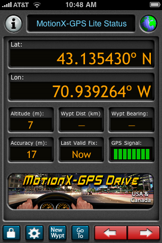
Here is the waypoint I saved from the 4th from the West tie point on the pier:
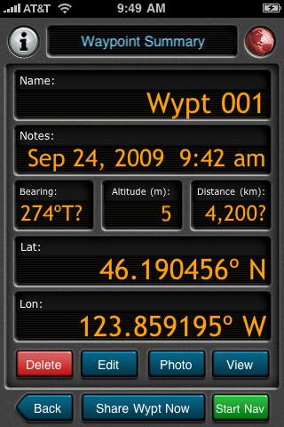
Online WAAS status from the FAA:
RTData_WaasSatelliteData.htm
Waas_SV_Status.txt
Found info on the 3G, but not the 3GS: Every iPhone 3G chip named, illustrated in detail
Also, thanks to Monica, I now know that it is pretty easy to grab a screenshot from the iPhone: press and hold the home key and tap the power button on the top. Do it quickly or your just end up in voice control mode that is reached by holding the home key down for a few seconds.
09.29.2009 10:42
Fall garden
Last night, I whipped up some home
made pesto... trying to make up for a cancelled cruise.
Hopefully, we will get some harvestable tomatillos before it gets too cold...
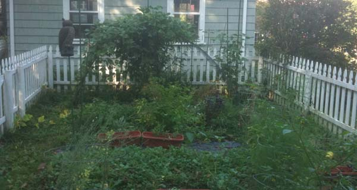
Hopefully, we will get some harvestable tomatillos before it gets too cold...
09.28.2009 20:42
UDP data broadcast on the Langseth
It is fairly common for ships to
broadcast sensor data on the internal science network using UDP
text messages. The Langseth does this, but I didn't see any details
about which computers were broadcasting and on what ports. To
figure this out, I fired up wireshark on my mac when it was
attached to the ship's science network via wireless.
I let it run for a while and paused the stream and scanned through for broadcast udp (Destination: 255.255.255.255 and Protocol: UDP). Here, you can see that I found packet number 5024 from host 192.168.3.21. I then noted that the machine is sending to port 33103. Selecting the packet, wireshark shows the contents of the packet, which looks like a "$GPGGA" NMEA string from a computer called cnav. C-NAV is the payed subscription GPS service that the ship uses for positioning.
Based on that information, I wrote a little UDP logging client that is about as simple as possible:
fink install wireshark-ssl sudo wireshark &
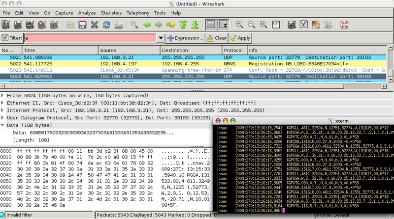
I let it run for a while and paused the stream and scanned through for broadcast udp (Destination: 255.255.255.255 and Protocol: UDP). Here, you can see that I found packet number 5024 from host 192.168.3.21. I then noted that the machine is sending to port 33103. Selecting the packet, wireshark shows the contents of the packet, which looks like a "$GPGGA" NMEA string from a computer called cnav. C-NAV is the payed subscription GPS service that the ship uses for positioning.
Based on that information, I wrote a little UDP logging client that is about as simple as possible:
#!/usr/bin/env python
import socket
import time
host='0.0.0.0' # All interfaces
port=33103
buffer = 10000
sock = socket.socket(socket.AF_INET,socket.SOCK_DGRAM)
sock.bind((host,port))
log = file('udpmsgs.dat','w+')
while 1:
data,addr = sock.recvfrom(buffer)
if not data:
log.write("NO DATA")
break
log.write(data)
I then ran this program and used "tail -f udpmsgs.dat" to watch the
data come streaming in:
cnav 2009:270:13:11:17.8980 $GPGSA,A,3,,32,,2,4,16,20,25,13,23,7,,2.2,1.0,1.9*0A cnav 2009:270:13:11:17.9732 $GPVTG,045.0,T,,M,0.01,N,0.01,K*61 cnav 2009:270:13:11:18.0503 $GPZDA,131117.00,27,9,2009,+0,+0*55 cnav 2009:270:13:11:18.6557 $GPGGA,131118.00,4611.32498,N,12351.52776,W,2,9,1.0,12.54,M,-20.71,M,10,0108*5E cnav 2009:270:13:11:18.7598 $GPGLL,4611.32498,N,12351.52776,W,131118.00,A*1e cnav 2009:270:13:11:18.8709 $GPGSA,A,3,,32,,2,4,16,20,25,13,23,7,,2.2,1.0,1.9*0A cnav 2009:270:13:11:18.9461 $GPVTG,000.0,T,,M,0.01,N,0.01,K*60 cnav 2009:270:13:11:19.0233 $GPZDA,131118.00,27,9,2009,+0,+0*5A cnav 2009:270:13:11:19.7349 $GPGGA,131119.00,4611.32498,N,12351.52776,W,2,9,1.0,12.54,M,-20.71,M,10,0108*5F cnav 2009:270:13:11:19.8378 $GPGLL,4611.32498,N,12351.52776,W,131119.00,A*1f
09.25.2009 13:00
Another day in Astoria
Half way up the hill in
Astoria:
Shipping traffic going past the unused ships at anchor:
I am definitely back in the North West...
Shipping traffic going past the unused ships at anchor:
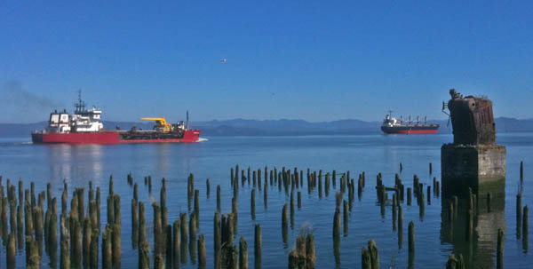
I am definitely back in the North West...
09.24.2009 16:24
Tour of the Langseth
Some photos from around the
ship...
The science area. The ship has 3 rows of screens in the front of the room. The SIS display controlling the EM122 multibeam and the Knudsen chirp subbottom profiler.
The computer server room that supports all those screens in the science lab. They have a wide range of machine types with an Apple Serve, SunFires, and many others.
The timeserver for the ship: a Symmetricom SyncServer S250.
The Langseth is designed to be a seismic vessel. We won't be using the air guns on this cruise.
Up to the bridge... They have dKart running on the starboard side of the console. Lots of AIS targets in the area.
Their AIS is a SAAB.
To get ready to collect gravity data, we did a gravity tie-in with the pier.
The science area. The ship has 3 rows of screens in the front of the room. The SIS display controlling the EM122 multibeam and the Knudsen chirp subbottom profiler.
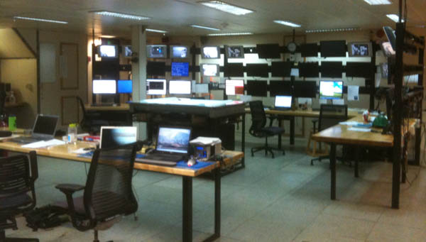
The computer server room that supports all those screens in the science lab. They have a wide range of machine types with an Apple Serve, SunFires, and many others.
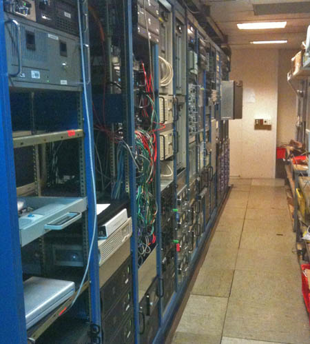
The timeserver for the ship: a Symmetricom SyncServer S250.
The Langseth is designed to be a seismic vessel. We won't be using the air guns on this cruise.
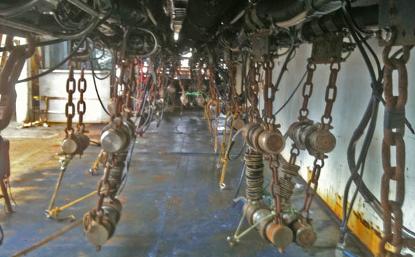
Up to the bridge... They have dKart running on the starboard side of the console. Lots of AIS targets in the area.
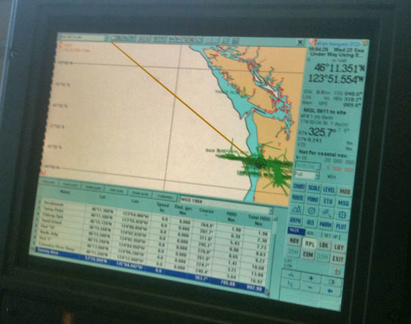
Their AIS is a SAAB.
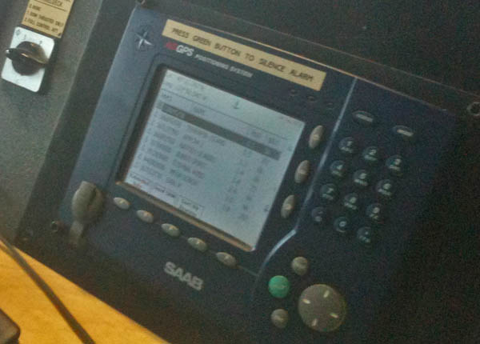
To get ready to collect gravity data, we did a gravity tie-in with the pier.
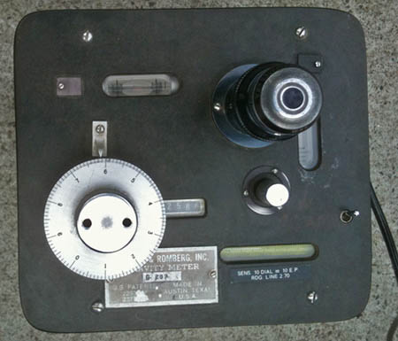
09.24.2009 15:43
Astoria, OR
We are looking to depart Astoria
tomorrow for our cruise. I got a bit of a chance to check out the
down last night and this morning. There are pilings like these all
over the place. Quite a challenge for surveying.
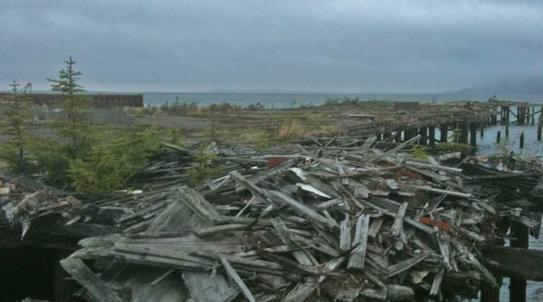
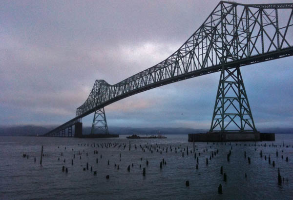
09.24.2009 06:42
nowCOAST gets currents
Yesterday, the NOAA nowCOAST released a new version
that contains Colin's FlowVis. We will be using the currents to
help plan our cruise out to the gulf of Alaska.
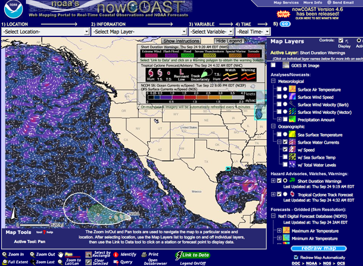
09.21.2009 22:10
Healy on the Google Lat Long Blog
Desktop discovery following Ocean Expeditions in Google Earth
... We recently added the US Coast Guard Healy arctic icebreaker expedition (see images), followed the Scripps Seaplex expedition to the Pacific garbage patch, ...
09.21.2009 15:57
SPOT Messenger activated
Thanks to the folks at gCaptian, I have just activated a
SPOT Messenger GPS to
Satellite hand held tracking system. Right now, the device is just
sitting in my car outside of the building at work. We shall see how
it does out at sea! The device seems simple enough, but blinking
LEDs are a bit confusing. After seeing 4 position reports from the
same location, I would saw that this thing does not have WAAS.
schwehr-public [share.findmespot.com]
schwehr-public [share.findmespot.com]
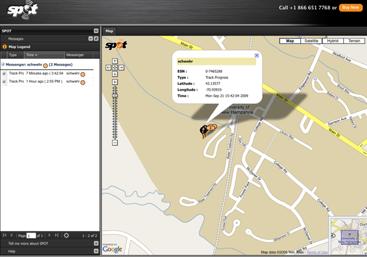
09.20.2009 14:54
Stuffed Pumpkin
I love fall, fall festivals, and fall
foods. Unfortunately, I'll be missing out this year for a big chunk
of it, so I'm trying to cram in a few things quickly.
Last year, we made a stuffed pumpkin from the one pumpkin that grew in our garden. It turned out super tasty! I went to the website to grab the recipe, but toaster-oven.net is temporarily offline. Thankfully, there is the great Google Cache, to bring it back from the dead. To keep it from being lost forever, here it scrapped from the cache.
Last year, we made a stuffed pumpkin from the one pumpkin that grew in our garden. It turned out super tasty! I went to the website to grab the recipe, but toaster-oven.net is temporarily offline. Thankfully, there is the great Google Cache, to bring it back from the dead. To keep it from being lost forever, here it scrapped from the cache.
1 sm. whole pumpkin, about 10 in. in diameter Boiling salted water 2 Tbsp. canola oil 2 lb. ground beef 1 lrg. onion, finely chopped 1 med. green pepper, finely chopped 2 tea. salt 1 tea. oregano 1 tea. vinegar Freshly-ground pepper, to taste 2 cloves garlic, mashed 3/4 C. seedless raisins 1/3 C. sliced pimento-stuffed green olives 2 tea. capers 1 (8 oz.) can tomato sauce 1/2 C. red wine 3 eggs, beaten Preheat oven to 350 degrees F. With a sharp knife, cut a circular top about 5 in. in diameter out of the pumpkin. Save the top to use as a lid. Scoop out pumpkin seeds and scrape inside of pumpkin clean. Place it in a lrg. kettle and cover with boiling salted water; cover kettle. Bring water to a boil, lower heat and simmer for about 10 min. until pumpkin meat is almost tender. The pumpkin should still be firm enough to hold its shape well. Carefully remove from water and drain well. Dry the outside and sprinkle a little salt on the inside. Set aside. In a heavy skillet with a cover heat oil. Add ground beef, onion and green pepper. Cook over med. high heat until beef is browned and crumbly. Remove from hat and add salt, oregano, vinegar, pepper and garlic. Stir in raisins, olives and capers, then gradually add tomato sauce and red wine. Cover skillet, return to heat and simmer for about 15 min., stirring occasionally. Cool slightly and add beaten eggs, mixing thoroughly. Fill cooked pumpkin with meat stuffing, pressing to pack firmly. Cover loosely with pumpkin lid and place in a prepared shallow baking pan. Bake for 1 hr.. Allow to cool for 10 to 15 min. before serving. To serve, carefully lift stuffed pumpkin onto a serving plate. Slice from top to bottom in flat wedges, spooning more meat filling onto each slice.I tend to do it a bit differently, but this gives the general idea. Toasted pumpkin seeds is an excellent bonus that comes with this recipe.
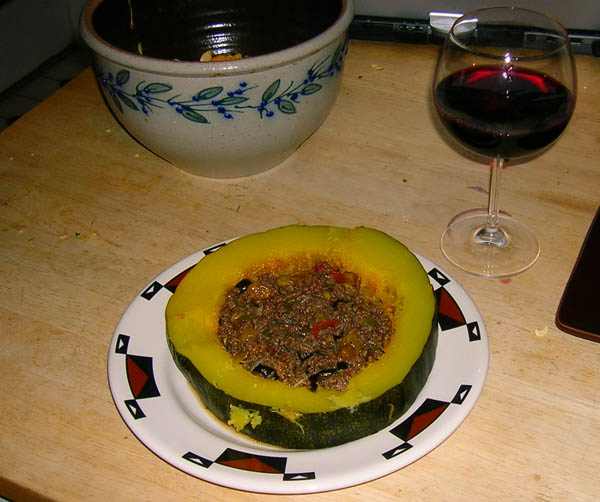
09.19.2009 18:40
LTE as an extra channel for AIS and related data
There has been a lot of talk lately
about WiMAX being
a possible additional channel or replacement for AIS. I had not
looked at another upcoming technology that could possibly provide
additional functionality above the two existing AIS channels:
3GPP Long
Term Evolition. In terms of adding functionality over standard
VHF AIS, both of these technologies have orders of magnitude more
bandwidth. The question really is how can these address the needs
of vessels in remote areas. If these systems could handle mesh
networking using ships as nodes, then it would be a big win for the
maritime community. I haven't heard much positive from some initial
WiMAX trials, but we shall see.
I still think what we need is a true mesh system with proper ACKs and authentication, but that can be done without any fixed station infrastructure if need be.
I still think what we need is a true mesh system with proper ACKs and authentication, but that can be done without any fixed station infrastructure if need be.
09.19.2009 18:04
Vessel traffic visualizations
Eric J. at Jeppesen just pointed me
to Niels Willems'
work on visualizing vessel traffic. Some really nice
visualizations. Check out this papers that on on his web
page.
Also referenced in a few other places:
NewScientist - Visions of data
Paul Kedrosky's Calm/Stormy Days
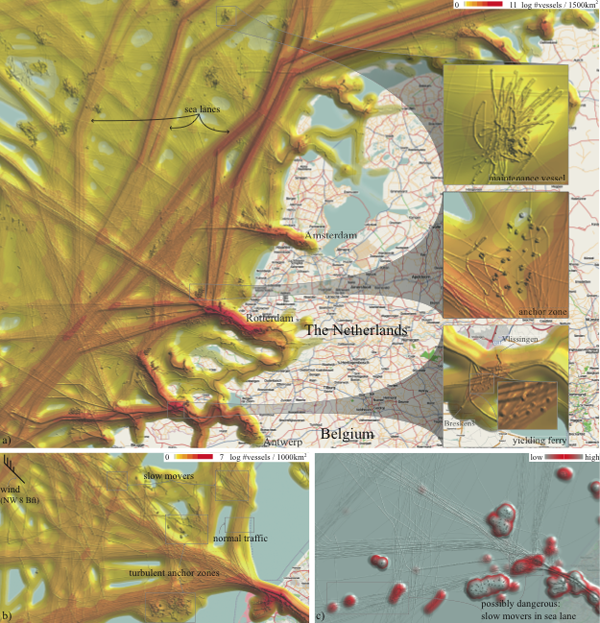
Also referenced in a few other places:
NewScientist - Visions of data
Paul Kedrosky's Calm/Stormy Days
09.18.2009 12:32
Embedding a presentation using SlideShare
My first try at putting a
presentation up on Slide Share:
SNPWG GeoCoastPilot
View more presentations from Kurt Schwehr.
09.17.2009 22:07
Goodby VZAccess Manager
I just can't take it any more. Any
Mac that has the Verizon VZ Access Manager is unstable. I am
cancelling my Verizon EVDO service and have uninstalled the VZ
Access Manager. Hopefully I will have more stable laptops! Having
access for my laptop all over the country has been great, but it
was very expensive and full of troubles.
09.17.2009 14:33
ERMA - CRRC 2008 annual report
The Coast Response Research Center
[CRRC] has their 2008 annual report out: crrc_annual_report_08.pdf.
It's got a section on the Environmental Response
Management Application (ERMA) and a nicely presented overview
figure that I created.
... Now in its second year of development, ERMA is transitioning from a prototype to a fully operational application. ERMA has become the primary spatial data delivery tool for NOAA's Office of Re- sponse and Restoration. "It's really exciting to see ERMA go from a prototype platform to an operational product," says Merten. US EPA and NOAA have established an interagency agreement to develop and implement a national standard for information and management for preparedness and environmental response based on ERMA. The first full-scale application of ERMA-which will set the stage for the national standard-is under development for the Caribbean Regional Response Team. "In EPA Region 2," says Mosher, "we're collaborating with USCG and other federal, Com- monwealth, and Territory agencies to use existing data and infor- mation products as well as the Regional and Area Contingency Planning efforts to contribute to the Caribbean ERMA platform." A draft version of the Caribbean ERMA was used during the Caribbean PREP drill in May 2009. ...I realized last week that I didn't have the ERMA videos on YouTube - they are back!
09.17.2009 11:45
UNH CS Appointment
I just heard from the UNH Computer
Science department and I am now an Affiliate Assistant Professor of
Computer Science!
09.16.2009 07:21
Blogger not LiveJournal for email postings
Yesterday, I tried to setup
LiveJournal to do email posting of blog entries. It just never
seemed to work. I gave it one more chance this morning, but it just
doesn't seem to work. I just tried blogger and it worked the first
time. I'll be using blogger to post if I'm on ships that only have
email (aka not a real internet connection).
Test of bloggers email to post gateway [schwehr.blogspot.com]
Test of bloggers email to post gateway [schwehr.blogspot.com]
09.14.2009 11:54
Healy 2009 Law of the Sea cruise - Aloftcon movie
I made a quick movie of the Aloftcon
camera on the Healy for the 2009 mapping cruise.
mencoder "mf://*.jpeg" -mf fps=6 -o test.avi -ovc lavc -lavcopts vcodec=msmpeg4v2:vbitrate=900
09.11.2009 20:41
MBARI robot
And at least one of the engineers at
MBARI previously work on spacecraft.
Deep-Sea Robot Roves the Unexplored Ocean Depths [wired]
A few more MBARI videos
Deep-Sea Robot Roves the Unexplored Ocean Depths [wired]
A few more MBARI videos
09.11.2009 11:34
YouTube does not like the oceans
Try as I might, I can't get YouTube
to take many sites in the ocean. After I place the red mark on the
site and hit save, it always ends up in the middle of Saskatchewan.
Why does YouTube not like the ocean?
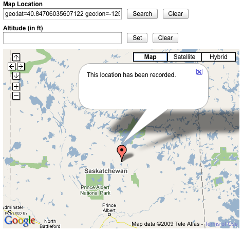
09.10.2009 13:47
Plume videos in Google Earth
These videos are definitely getting
noticed.
1400 Metre Plume Discovered [Hydro International]
PlumeVideos.kmz
Trackback: links for 2009-09-12 [Ogle Earth]
Fledermaus' mid-water visualisation technology has helped scientists to discover a 1400m plume off the northern California (USA) margin. While on a cruise to test the new Kongsberg EM302 multibeam sonar in May 2009, the NOAA ship Okeanos Explorer, discovered a 1400m high plume rising from the seafloor. The feature was noticed in the online display of the water-column data of the sonar, and further analysed in the new Fledermaus mid-water visualisation tool. ...I've put the two videos into a Google Earth visualization. It's just two placemarks. I pasted the embed info from the YouTube videeos (e.g. this video). The place them in a folder and do save as.
PlumeVideos.kmz
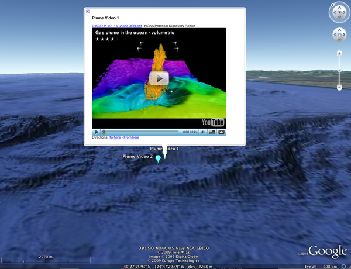
Trackback: links for 2009-09-12 [Ogle Earth]
09.10.2009 07:54
Healy - Sailing into the sun
The Healy crew is again experiencing
night. That means they are likely to catch excellent views of
sunrises and sunsets. Here is one from aloftcon camera that was
sent back to the archive in the last day.
Original full sized: 20090910-0501.jpeg
Original full sized: 20090910-0501.jpeg

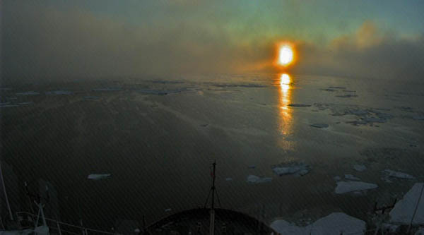
09.09.2009 05:57
TV32 with the right whale zone messages
I've finally have Transview setup on machines to view
the right whale zone messages being broadcast by me from PTown.
Here is what it looks like in TV32:
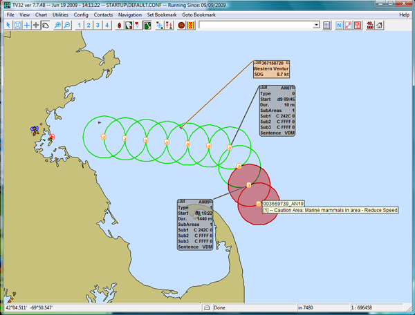
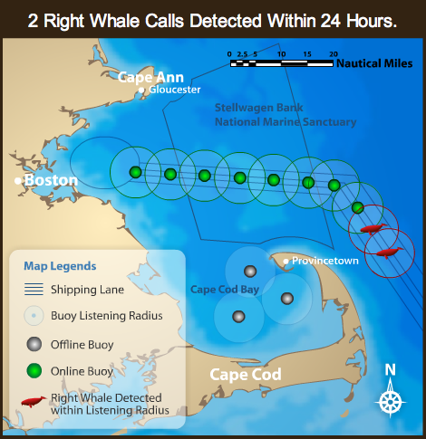
09.07.2009 09:32
McMurdo station summer season approaches
The Healy is in the last strechtes of
it Law of the Sea cruise and people are starting to think about the
other pole [Greg's new blog]: Antarctica. Here is the McMurdo
Station web cam.
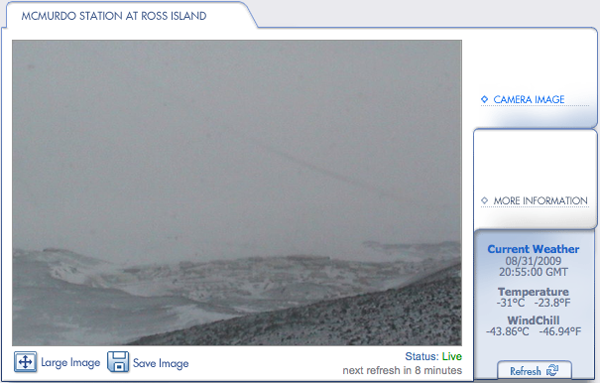
09.06.2009 09:13
iPhone closeup photos
Given enough light, the iPhone camera
seems to do okay close up. What is this going to turn into?
09.05.2009 16:48
Installing Aldebaran II on Vista
Les, Monica, Will and I worked on installing Aldebaran II on two brand new Dell laptops that came with Vista Home Premium. Something was seriously wrong with the DRM subsystem (Data Execution Protection [DEP] errors) on fresh Home Premium install. The first attempt had the installer not even run. Will wiped the machines an attempted to install XP Pro. That installed, but almost all of the hardward drivers were not available. He got most of it working with crazy drivers written in Russian (using babel fish to read the instructions). We had a solution, but were not happy with it. ICAN reported that they had it working on Vista Business, so I bought two UNH licensense to Vista B. The installer workedm, but many frustrating hours later we were stumped by this error message when we ran Aldebaran II: "ICANAppLoader: Error loading the HASP driver. Please re-install the driver."
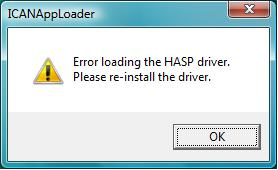
Les tried to track this down and installed the HASP drivers from Aladdin, but that made no difference. Les even tried XP Pro on VMware under Vista Business, but XP Pro was unable to connect to the network.
Finally, ICAN asked us if we had the license dongle in when installing. We had always been very careful not to have the dongle in during any install phase. Turns out that if we uninstalled Aldebaran II, rebooted the machine, and plugged in the dongle, and installed Aldabaran II with the dongle in, Aldebaran II popped right up immediated.
Conclusions:
Aldabaran II works on Vista Business, not on Home Premium. When installing Aldebaran II, make sure the license dongle is in the computer before you start the install process. Also, the installer does not work if you are doing it via remote desktop. It's possible that it will work on Vista Home, but we don't know the magic sauce to for this particular laptop.
09.04.2009 06:59
Healy 2009 Law of the Sea cruise path
I've posted a kmz of the Healy's
cruise track for all of 2009 to date (covering 2009-Apr-28 to
2009-Aug-04):
2009healy-science-ccom-jhc-lots.kmz [195K]
For the Healy over 2009 to date (including prior cruises). -11 C likely means that the sensor was out of the water at some point, no?
From Seattle to the Arctic. North is to the right.
Barrow to 84N:
2009healy-science-ccom-jhc-lots.kmz [195K]
For the Healy over 2009 to date (including prior cruises). -11 C likely means that the sensor was out of the water at some point, no?
sqlite3 -html healy.db3 'SELECT MIN(sea_temp), MAX(sea_temp), MAX (lat) FROM healy_summary;'
| Min Water C | Max Water C | Max Lat |
|---|---|---|
| MIN(sea_temp) | MAX(sea_temp) | MAX (lat) |
| -11.15 | 15.78 | 84.222 |
From Seattle to the Arctic. North is to the right.
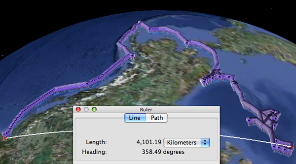
Barrow to 84N:
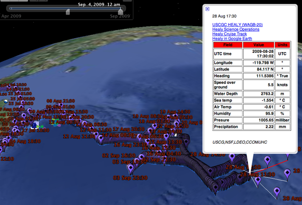
09.03.2009 15:47
2006 AIS data for SBNMS by month
Today, I got access to a RAID drive
that someone else in the lab has been using for a while. On it are
some really great data products that I had yet to release. Here is
one of them.
09.01.2009 16:41
Filling time between position report commstate time reports
I'm still slowly working through the
AIS position reports to give them the best estimate of time that I
can muster. The current step that I took here was to look for
neighboring position reports with the full commstate timestamps
from one vessel that are within 60 seconds of each other. Then any
position reports from that ship are sure to be in that time range
and I can use the neighbors plus the pos report's UTC seconds to
compute a reasonable timestamp for that packet. Before I ran this
algorithm, I already used my sliding window to invalidate some
commstates as unreliable.
The top graph is USCG seconds in red and cyan from bottom left to top right, while the red and green are relative offsets in seconds between USCG time and basestations (green) & pos reports with estimated time (labeled on the right). It looks like the time estimates are doing a good job of tracking the two basestations' time reports.
The bottom graph is again the UTC seconds for each position report.
There clearly is a lot more work to do to get most of the packets tagged with a usable time. It also looks like I have been rejecting a lot of the commstate time packets. I will have to look into why!
The top graph is USCG seconds in red and cyan from bottom left to top right, while the red and green are relative offsets in seconds between USCG time and basestations (green) & pos reports with estimated time (labeled on the right). It looks like the time estimates are doing a good job of tracking the two basestations' time reports.
The bottom graph is again the UTC seconds for each position report.
There clearly is a lot more work to do to get most of the packets tagged with a usable time. It also looks like I have been rejecting a lot of the commstate time packets. I will have to look into why!
SELECT COUNT(*) FROM position WHERE commstate_utc_hour IS NOT NULL AND est_sec IS NULL; COUNT(*)65
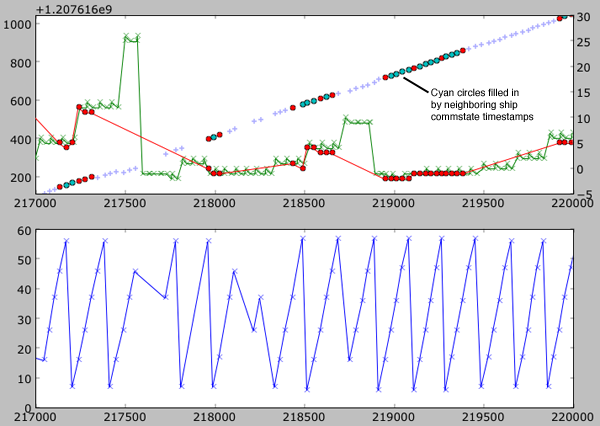
09.01.2009 11:08
Ferries
The work to date on
identifying ferries from AIS has gone pretty well. A human in
the loop reduced the number down to a much more manageable number
of ships. I then threw out any position reports slower than 1 knot.
One day's worth of data is a bit much for Google Earth, but it does
load.
It's hard to tell how many ferries I'm missing with this strategy.
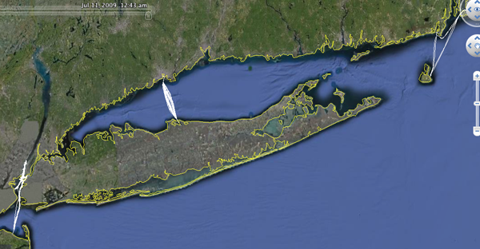
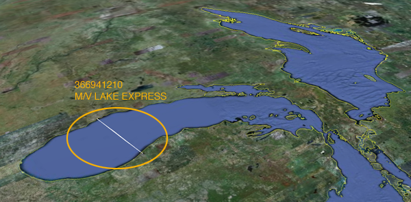
It's hard to tell how many ferries I'm missing with this strategy.
09.01.2009 00:12
pySQLiteGUI - an interface to SQLite
SQLiteCC is definitely dead, and it
would be nice to have another tool that just works.
I just checked out pySQLiteGUI and I'm pretty impressed with what Milad Rastian did in just under 900 lines of python. It doesn't do everything, but it's still pretty nifty. It doesn't do any sort of paging, so with a database of any reasonable size, it will be really slow.
I just checked out pySQLiteGUI and I'm pretty impressed with what Milad Rastian did in just under 900 lines of python. It doesn't do everything, but it's still pretty nifty. It doesn't do any sort of paging, so with a database of any reasonable size, it will be really slow.
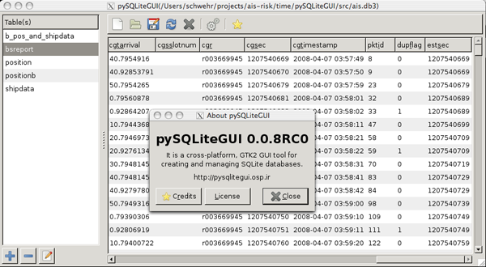